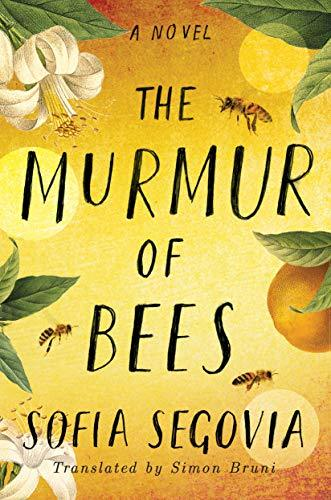

"The Murmur of Bees"
- Read on 2021-04-14
- Rating: ️️️️️
- Format: 🎧 (14 hours 20 minutes)
I enjoyed this interesting book. I liked how it wove some Mexican history (at the time of the revolution, and influenza) in, while drawing me closer to the lives of the Morales family, and their town. At the same time, it kept me carefully curious about a central figure - Simonopio - a disfigured boy they found as a baby, covered in a blanket of bees. I've read only a handful of books in Spanish, though this one I did in English. Sofía Segovia's writing was beautifully descriptive - nearly poetic at times, and makes me sad more books of hers haven't been translated for more to enjoy. Regardless, it makes me want to look at her other books, and see what else I'd like. (one star off, because I felt like it dragged for a bit - but one I got past that, I was hooked)
- Prior: Dawnshard
- Next: Stealing Home